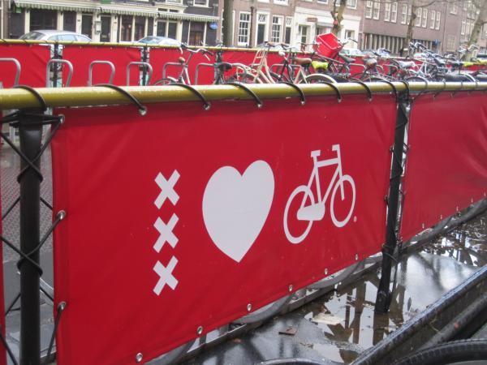

De Eindopracht week 5 t/m 8
Samengewerkt met: Jasper, Marijn, Stefanie en Anne-Claire
Project Edenspiekermann

De probleemstelling
Geparkeerde fietsen vormen
een steeds groter probleem in
grote steden.
Onderzoeksvraag
Hoe kan het fetsparkeren rond
het Gerard Douplein in de Pijp
verbeterd worden?
De opdracht
Bedenk een digitale, interactieve
campagne of toepassing die fetsers
beweegt om rond populaire plekken in
de stad meer gespreid te parkeren.